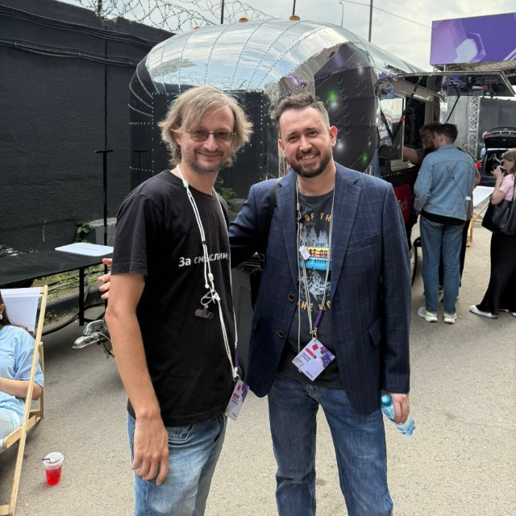
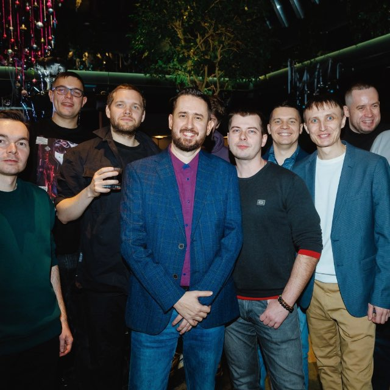

QA Engineer · Test Automation · Java & Python
Нахожу баги глубже пользовательского уровня — понимаю системы
изнутри, потому что сам их строил и испытывал.
QA Engineer с аналитическим мышлением и нестандартным путём в профессию. До IT — 10+ лет в промышленной инженерии: наладка сложных систем, испытания оборудования, техническая документация.
Этот бэкграунд даёт мне суперсилу в тестировании: я понимаю поведение системы глубже пользовательского уровня — на уровне логики, архитектуры и краевых состояний.
Сейчас в SevenTech тестирую front + back сложных интеграционных решений. Умею находить неочевидные баги и ценю предсказуемость и прозрачность процессов.


Использую AI-инструменты не как поисковик, а как часть рабочего процесса — для ускорения тест-дизайна, анализа кода и автоматизации рутины. Настраиваю MCP-интеграции, оркестраторы и правила, чтобы AI понимал контекст проекта.
@ExtendWith({TmsExtension.class})
public class DialogueFilterTest extends BaseApiTest {
@BeforeEach
void prepare() {
dialogues.allDialoguesPage.clickAllDialogues();
dialogues.dialogueFilterPage.clickCloseFilterIfExists();
}
@Test
@TmsLink("7034")
@DisplayName("Применить фильтр по каналу WhatsApp")
void checkChannelFilter() {
// 1. Подготовить данные — отправить сообщение через API
var message = builder.message.getRandomSendMessageDTO();
operations.log().actionAndWaitForLog(
() -> messageService.sendMessage(message),
LogTypeList.CUSTOMER.toString()
);
// 2. Применить фильтр на UI
dialogues.dialogueFilterPage.clickDialoguesFilter();
dialogues.dialogueFilterPage.selectChannelsDropdown();
dialogues.dialogueFilterPage.selectChannelWhatsApp();
dialogues.dialogueFilterPage.clickApplyFilter();
// 3. Проверить результат
assertThat(dialogues.allDialoguesPage
.isExistsInFirstRowByProfile(message.getProfileName()))
.isVisible();
}
}Ищу full-time позицию QA Engineer / Automation Engineer. Удалённо или офис в Твери. Готов к редким командировкам.
i@dhollow.ru ✉️